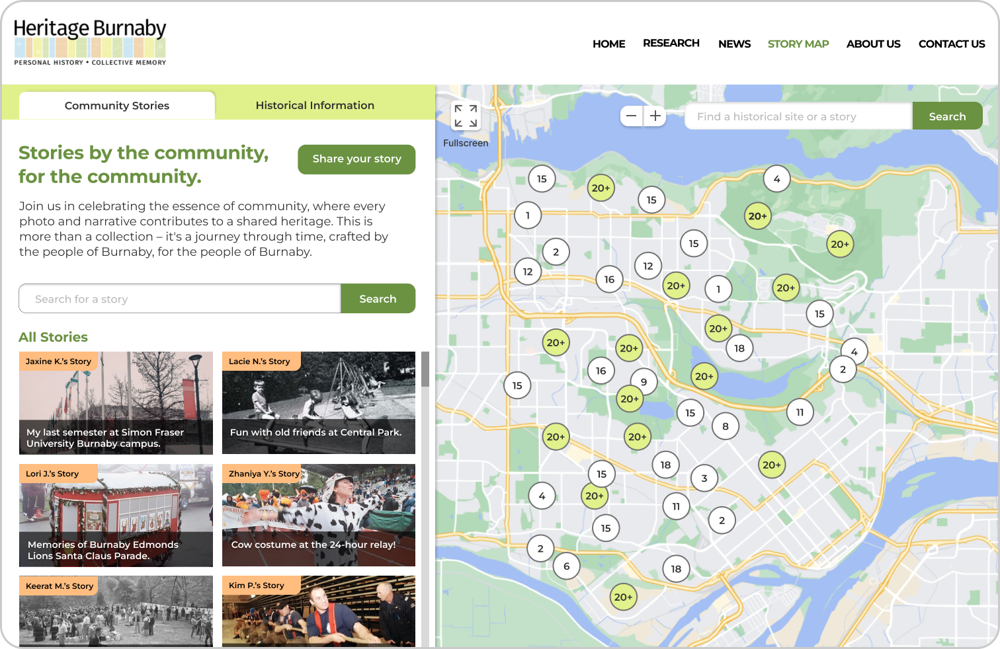

Team
Jaxine Kurniawan
Keerat Mahil
Lacie Nguyen
Kim Phan
Zhaniya Yeltindinova
My Roles
Project Lead
UX Research
UX/UI Design
Tools
Figma
Miro
Timeline
12 weeks
(Sep - Dec 2023)
Project Brief
In this senior-level interaction design course, teams partnered with a client to help identify a problem with one of their products or services and design a solution using technology.
The Client
Who is Heritage Burnaby?
Heritage Burnaby is an online repository for Burnaby's historical archives, with the goal of promoting knowledge and exploration of Burnaby's history and building community bonds. They have an interactive map called the Charting Change Atlas which was created in 2010 to showcase how Burnaby's landscape has changed over time.
The Problem Space
Charting Change Atlas
Since launching in 2010, the interactive map was initially popular but has not been updated since its release and became inactive, leading our client to wonder whether the map had potential in drawing current interest if it was redesigned.
Problem Statement
People don't feel personally motivated to engage with the map.
User research revealed people were confused about the map's purpose, found the information interesting but impersonal, and were frustrated by its usability issues stemming from the map's outdated purpose and target audience. This prevented users from wanting to revisit the map, leading to our challenge of re-aligning the map to current interests.
Solution
Repurpose the map as a story map of community-driven photos and stories.
In order to address this lack of personal connection, we redesigned the map to attract visitors through personalized storytelling, by allowing anyone with a connection to Burnaby to share their stories and photos connected to historical landmarks on the map, which was a solution validated by findings from our participatory workshop.
Before getting to the design process and final product, here is a quick before and after comparison of the old and new landing page design for the map.
Old Landing Page
New Landing Page
Discovery
User Research
Who
What
How
Why
Main insights from usability testing
Main insights from semi-structured interview
Using affinity diagramming in Miro we coded and sorted data points into positive and negative comments from the interview into themes, leading to these main insights:
Positive
Negative
Narrowing Down the Problem
Synthesizing Research into Major Pain Points
1) Map lacks clear purpose.
2) Map feels impersonal, preventing users from wanting to interact.
3) Poor navigation and information organization prevent usability.
4) Outdated visual design makes website feel unappealing.
Define
Problem Framing
How might we improve usability and personalize the interactive map while retaining it's historical/informational value to increase people's interest and engagement with the map?
Ideate
Participatory Workshop to Brainstorm Solutions
Who
How
What
Why
Key Discovery #1
"It doesn't feel like a StoryMap"
During the workshop, an urban planning assistant highlighted that the map, created with Esri's StoryMaps, lacked the essence of a true story map. This prompted me to research further, revealing that Esri's StoryMaps has grown from 100 maps in 2011 to 2.2 million in 2023, which suggests there is value in the story mapping concept, but issues with its current execution.
Key Discovery #2
Evident active interest shown in story sharing from Burnaby residents on Facebook
A participant from the workshop led me to discover a Facebook group called Burnaby Nostalgia with over 10,000 members. Members shared photos and memories of historical and recreational sites and hundreds of likes and comments were being exchanged daily.
This evidence drove me to propose transforming the map into a community story-sharing platform, integrating protected historical sites and beloved local spots.
Proposed Solution
Repurpose the interactive map into a community-driven storymap , integrating local stories. This maintains historical information in a separate tab, ensuring relevance to users while fostering community engagement.
Ideate
Competitive Analysis
I looked at other map-based interfaces for inspiration and found the webpages for Layers of London and Airbnb to have the most relevant UI design elements to apply to our story map.
Key insights

Ideate
Low-Fidelity Wireframe Sketches
I first sketched quick low-fidelity wireframes to experiment with different page layouts and information architecture at a higher level. After discussion as a team, we chose to move forward with a combination of the elements outlined in red, based on their efficiency in accessing information.
Ideate
Mid-Fidelity Wireframes / User Flow
Then, I created mid-fidelity wireframes to finetune the integration of the new community stories feature with the existing historical information, with consideration of the pain points from user research as well as key insights from the competitive analysis:
Prototype
Final Design Mockup
Key Design Decisions
Style Guide
I created a style guide extended from Heritage Burnaby's existing design system, to ensure cohesion when working as a team on the prototype, and also allow for consistency in future updates.
Key Design Decisions
Addressing Usability Issues

Key Design Decisions
Community Stories
Key Design Decisions
Story Submission - User Side


Key Design Decisions
Story Submission - Client Side
Key Design Decisions
Historical Information

Key Design Decisions
Marketing and Entry Point
Final Takeaways
What I learned...
1) Getting the design right > getting the right design.
Our professor (Gillian Russell) emphasized Bill Buxton's concept from "Sketching User Experiences" during our project: the distinction between getting the right design and getting the design right, which made me understand the importance of focusing not just on achieving a design solution, but ensuring that the solution effectively addresses the users' needs.
2) Designers need to be flexible.
The iterative design process demands continual refinement of our problem statement. Prioritizing decisions aligned with user needs across multiple iterations, I learned the necessity of flexibility as a designer, and continually adapting design choices as needed.
Things to improve...
Due to the project's scope and time limitations, we couldn't carry out usability testing to validate our design. However, conducting usability testing would be my next step to further develop this project.